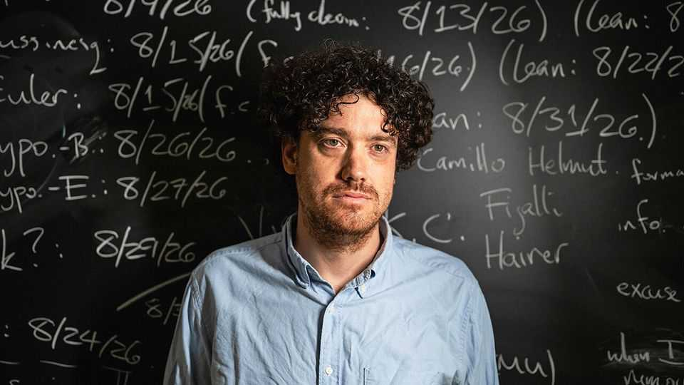

Top mathematicians are outraged by OpenAI’s methods
24 Fields Medal winners have written a letter of objection

Sep 17th 2026
Not since Socrates complained that the written word might make people lazy about remembering things has there been such an outpouring of academic angst against a new technology. In an open letter published on September 11th 25 Fields Medal winners—akin to Nobel laureates in the field of mathematics—said that AI could ruin the foundations of their subject. AI companies, they claimed, are solving mathematical problems merely to benchmark the strength of their models, rather than in a true spirit of intellectual inquiry. Doing so, they argue, is “detrimental to the science of mathematics, and to the mathematical community”.
Their letter was in response to AI making a spate of apparent breakthroughs at the subject’s frontier, the latest being announced on September 8th by OpenAI, one of the leading firms in this area. A group from OpenAI said they had solved the Navier-Stokes problem, one of seven “Millennium Problems” chosen in 2000 by the Clay Mathematics Institute as the hardest and most important in the field.
OpenAI thus seems to have gazumped Tristan Buckmaster (pictured) and Levent Alpöge, two mathematicians who had been labouring on that task, alongside some AI, and were thought close to a solution. The firm released a 166-page paper describing its work, which employed models not yet publicly available. Despite its length, however, this paper contained little of the explanatory detail which mathematicians typically provide when sharing a new discovery.
At first sight, this spat sounds like a highfalutin version of the pearl-clutching that accompanied the spread of electronic calculators (loss of mental-arithmetic skills), or even of ball-point pens (that a lack of sensory impact on the brain might have adverse consequences for writing style). Those concerns, real enough at the time, now sound as laughable as Socrates’s—for the written word has augmented memory, not replaced it.
But there is a difference. The letter writers do not seem to be trying to stop the use of AI in their discipline. Indeed one of them, Terence Tao, argued of it, in a video posted by OpenAI on X, a social-media platform, in May, that “It allows me to experiment; I will try crazier things.” He then listed AI’s helpful capabilities and his hopes of how it would be especially useful if the work was shared, as is mathematical culture and tradition.
Their concern, rather, is that definitive answers to problems are but one aspect of maths. What is often more valuable is that the process of arriving at important proofs leads to the asking of yet more questions and the creation of new areas of study. This, they fret, risks being lost if AI does the grunt work—and doubly so if that grunt work is done by organisations that then fail to release sufficient details to the outside world for human beings to read and understand. As Hugo Duminil-Copin, another of the signatories, puts it: airdropping someone on the summit of Mount Everest is rather different from climbing it.
If this sounds a self-serving argument by professionals fearful for their jobs, it no doubt is. But that does not make it entirely meritless. Mathematicians may start to work less openly, in order to avoid the fate of Dr Buckmaster and Dr Alpöge. Another, more subtle, danger is that leaning on the crutch of AI will erode habits of mind and make human mathematicians less capable practitioners of their field.
Here, there is a historical analogy: a phenomenon called cognitive offloading, in which, by reducing the load on human memory, information technology causes the mind’s skills to atrophy in the sorts of ways that bothered Socrates. Work published as long ago as 2011, by Betsy Sparrow of Columbia University and her colleagues, confirmed the common-sense idea that people turn to Google-searching answers when faced with tough questions, instead of attempting to recall what they know. A more recent study, by Michael Gerlich of the SBS Swiss Business School, similarly found “a negative correlation between the frequent use of AI tools and critical-thinking abilities”.
The row therefore encapsulates wider fears about the spread of AI. OpenAI’s executives have said in the past that their version of the future is one in which AIs work with mathematicians on “figuring out what problems are actually important to tackle”. That points to a world where cognitive mathematical effort may indeed be offloaded onto software agents. It is the details of how this happens which will determine whether that is a good thing or a bad one and so whether, in this case, Socrates may have been right after all. ■